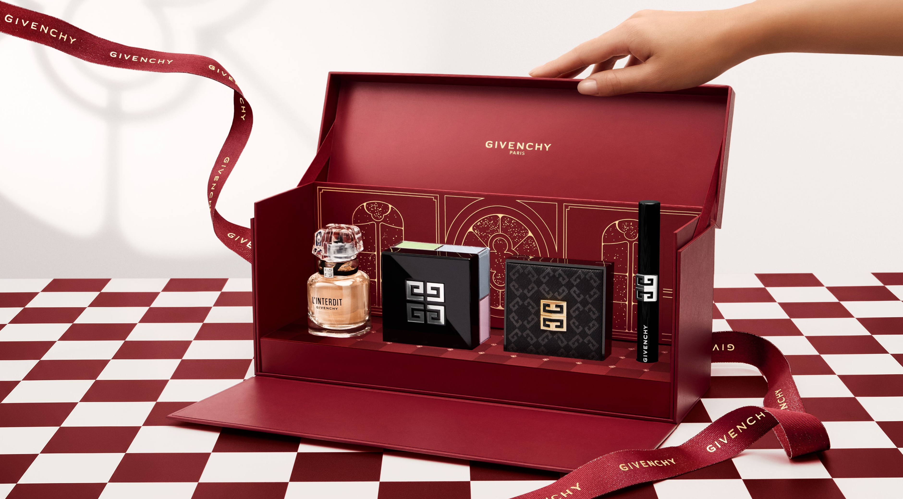
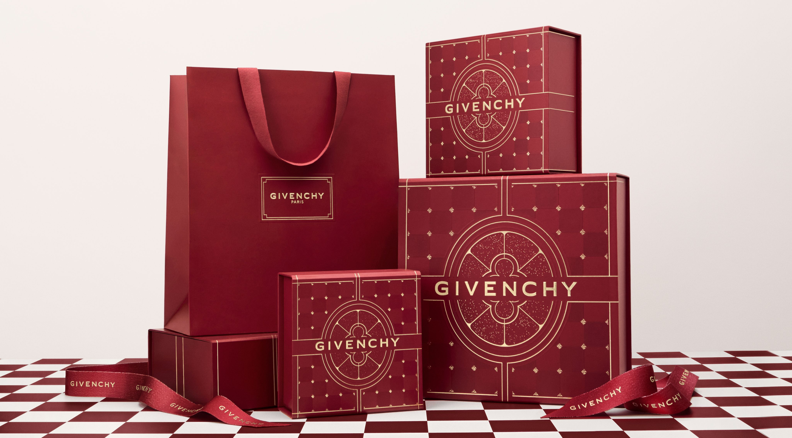
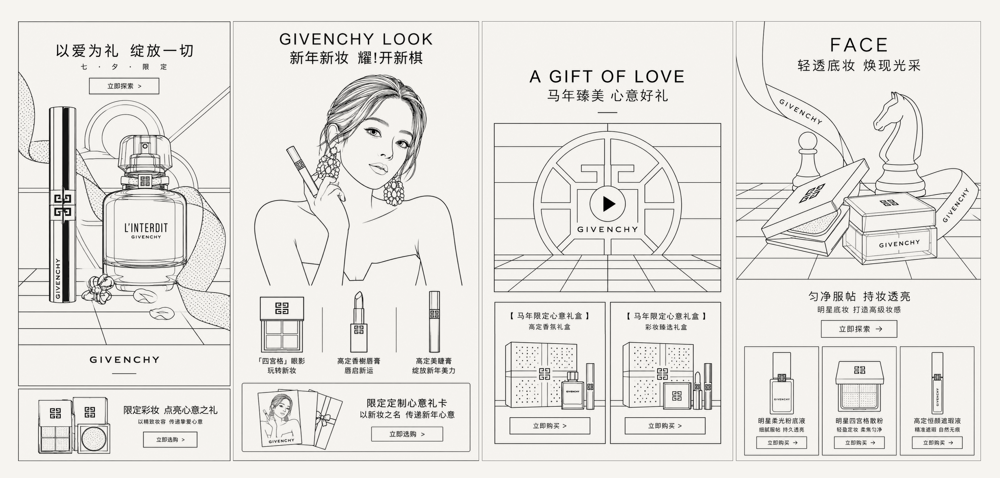
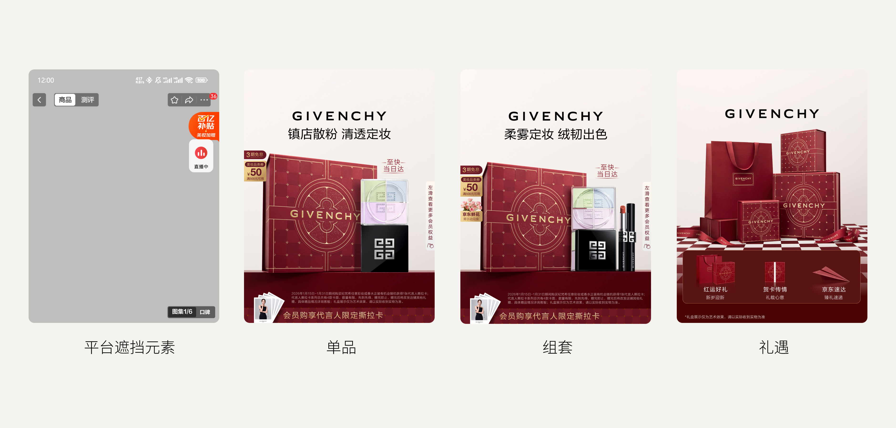
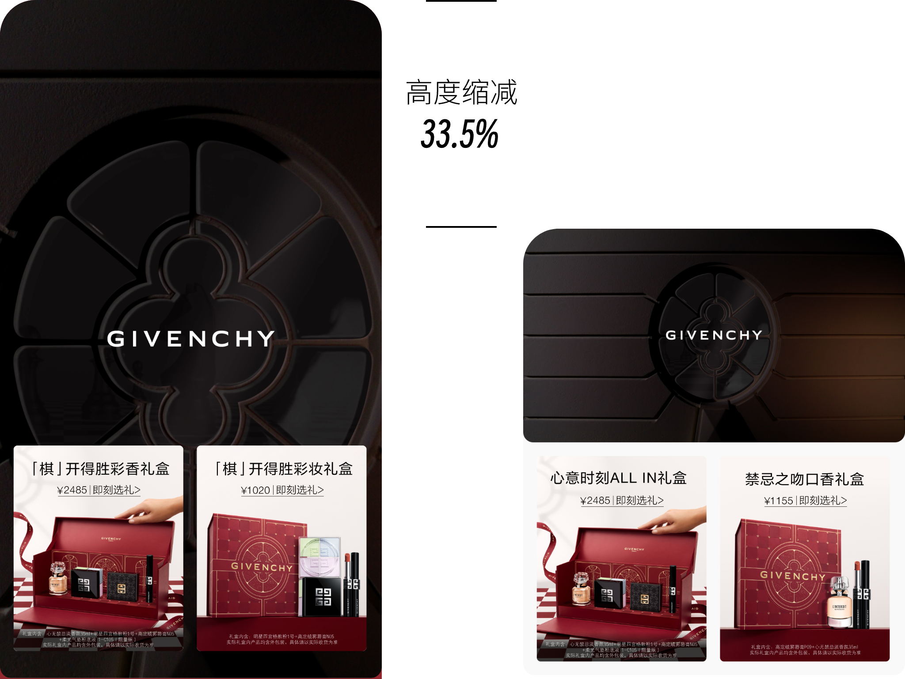
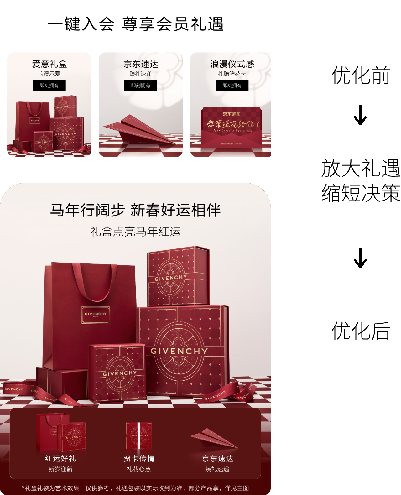
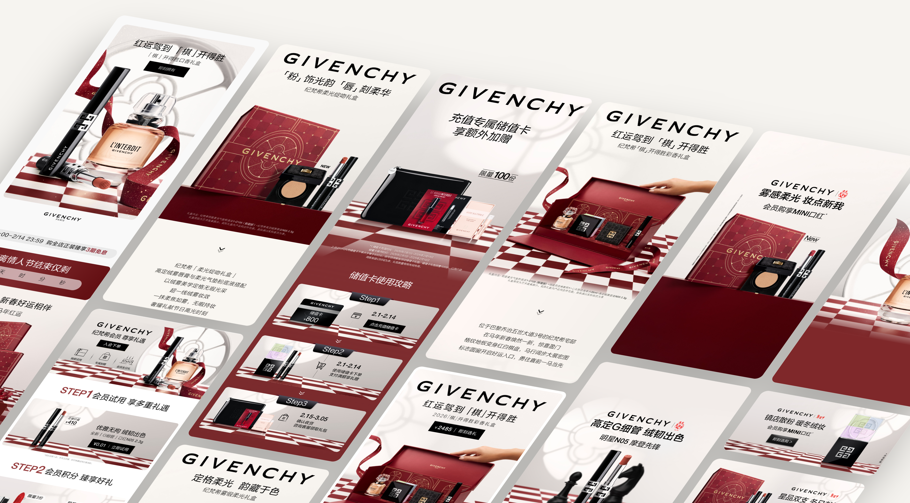
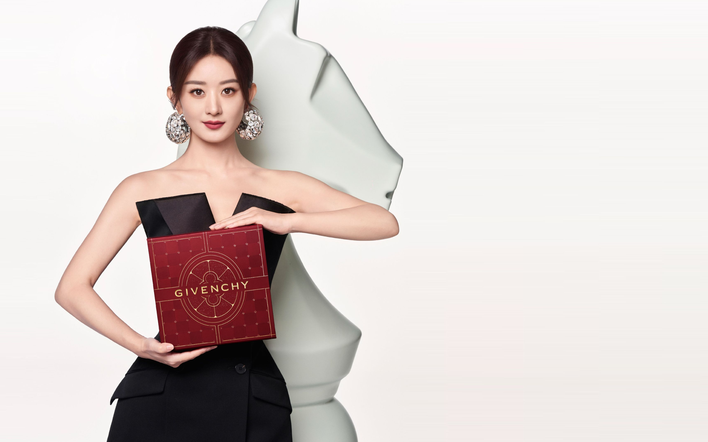

- 角色
- 视觉主导 · 节点整合
- 负责
- 店铺首页与主图模板、多触点视觉整合与审核
- 边界
- 页面框架与产品组合由品牌确定

从官方新年视觉，延展到京东全店。
品牌以国际象棋中的“马”为视觉锚点，呼应马年主题，并以礼盒套装与送礼场景承接春节礼赠需求。项目需要在品牌既定规范内，将核心视觉延展到店铺首页、主图、详情页、投放与直播间，并在固定节点前完成上线。

页面框架已确定，但关键变量仍在变化。
页面模块、内容顺序与整体版式由品牌基本确定，我不负责重做页面大框架。项目推进期间，核心产品与部分素材仍可能调整；不同渠道的尺寸和界面遮挡也不相同，但上线时间已经固定。因此，需要先建立不会因素材变化而失效的构图规则，再推进后续延展。

先确定安全位置，再适配不同画幅。
主图上线后会叠加顶部、右侧和底部控件。如果直接套用官方素材，产品、品牌标识和利益信息容易进入遮挡区域。我先确定产品主体、品牌标识和核心信息的安全位置，再分别重组方形与竖版构图，而不是对同一张画面直接裁切。
聚焦高曝光，
让更多好礼率先登场。
把握前三屏的曝光优势，精简部分模块高度，在延续品牌质感的同时，集中呈现更多 SKU，让送礼选择更早被看见。

放大礼赠心意，
减少下单顾虑。
突出礼盒质感与物流保障，兼顾送礼仪式感与收礼确定性，让用户既感受到心意，也更安心地做出选择。

同一套视觉规则，进入不同触点。
以统一的品牌视觉串联店铺首页、商品详情页、广告投放与直播间：店铺首页营造新年礼赠氛围，详情页承接产品与礼盒信息，广告突出核心卖点，直播间强化活动识别。针对不同画幅、信息密度与平台遮挡调整构图，让各触点各有侧重，又保持一致的品牌表达。


在既定框架内，完成多触点落地。
通过前置构图规则、页面节奏调整和多触点整合，完成店铺首页、主图、详情页、投放与直播间视觉的上线交付。
这个项目的价值不在于重做品牌框架，而是在真实限制中完成判断与取舍，让不同触点保持清楚、一致，并按计划上线。